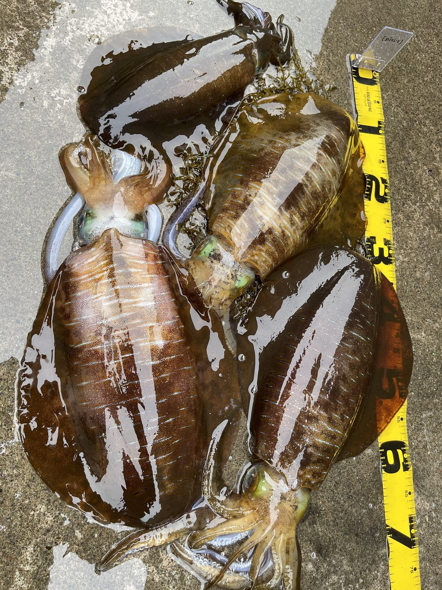
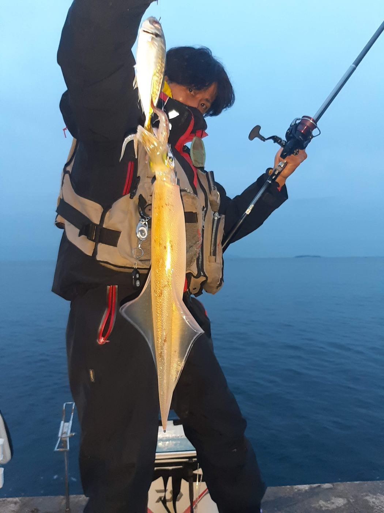

実際の釣り経験を活かした、釣具・釣り関連用品の販売
実際の釣行経験をもとに選定した釣具・釣り関連用品を取り扱っています。電気ウキ、LEDウキトップ、ライン、のべ竿、アオリイカ用品、釣り用接続パーツなど、実釣で使用する商品の販売を行っています。


Field Experience
実際の釣行経験をもとに、使いやすさとコストパフォーマンスを重視した釣具・釣り関連用品を取り扱っています。
初心者からベテランまで、安心して使用できる商品の提供を目指しています。
Business Overview
釣り用品を専門に扱うEC販売事業者として、商品販売から販売チャネル運営まで一貫して行っています。
実際の釣行経験をもとに選定した釣具・釣り関連用品を取り扱っています。電気ウキ、LEDウキトップ、ライン、のべ竿、アオリイカ用品、釣り用接続パーツなど、実釣で使用する商品の販売を行っています。
釣り竿、リール、ライン、電気ウキ、アオリイカ用品などを販売しています。
釣り用小物、仕掛け関連パーツなど幅広い商品を販売しています。
複数のオンライン販売チャネルを運営しています。
釣行経験をもとに、使いやすい釣具関連商品の企画・販売を行っています。
Fishing Gallery
Sales Channels
各モール・マーケットプレイスにて、釣具および釣り関連用品を販売しています。
Product Categories
堤防釣りや磯釣りを中心に、ウキ釣り、夜釣り、ファミリーフィッシング向けの釣具・釣り関連用品を幅広く取り扱っています。
夜釣り向けの電気ウキやLEDウキトップなど、視認性と扱いやすさを重視した商品を取り扱っています。
PEラインやフロロカーボンなど、用途やターゲットに合わせて選べる商品を取り扱っています。
のべ竿・磯竿・投げ竿をはじめ、ファミリーフィッシング向けのリールも取り扱っています。
スナップ・スイベル・サルカンなど、釣りに必要な小物や仕掛け関連パーツを取り扱っています。
アオリイカ釣りで使用する自作カンナ、仕掛け関連用品、接続パーツなどを取り扱っています。
自作カンナの紹介を見るCompany Profile
会社の基本情報、連絡先、事業内容を一覧で掲載しています。
Specified Commercial Transaction Act
販売条件、連絡先、返品交換条件を明確に掲載しています。
Contact
お取引、商品、法人情報に関するお問い合わせは、下記連絡先までお願いいたします。